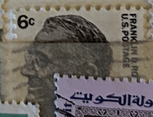
| SOURCE | TITLE| IMAGE MATCH | click to source page |
| www.ebay.com | TUNISIA / Tunisie 5 Dinars Banknote 1993 old Circulated ... | 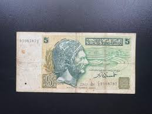 |
| www.ebay.com | Central Bank of Kuwait (Fifth Series) Kuwaiti Dinar One ... | 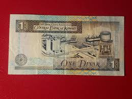 |
| en.numista.com | 5 Dinars (Hannibal; 2nd. type) - Tunisia – Numista | 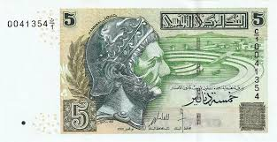 |
| www.leftovercurrency.com | 10 Iraqi dinars banknote (Ibn al-Haytham) - Exchange yours ... | 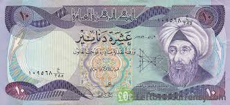 |
| www.reddit.com | Found lots of old banknotes in a bag that used to belong to ... | 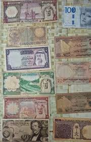 |
| www.ebay.com | Tunisia 5 dinars banknote used, folded | eBay | 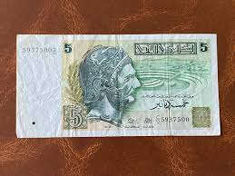 |
| www.facebook.com | Tunisia's newly redesigned 10-dinar banknote honors Tawhida ... | 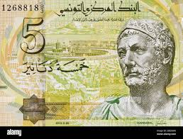 |
| www.alamy.com | 5 Tunisian dinars bank note. Tunisian dinar is the national ... | 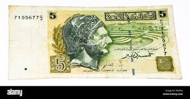 |
| katzauction.com | Yemen North 1 Rials 1969 (ND) | Katz Auction | 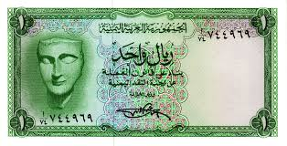 |
| www.etsy.com | Syria 5 Pounds Banknote Currency Banknote 1977-91 UNC. Old ... | 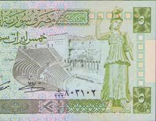 |
| www.goldeneaglecoin.com | Kuwait 1/2 Dinar 1994- P#24d UNC - Golden Eagle Coins | 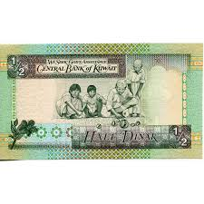 |
| en.wikipedia.org | Tunisian dinar - Wikipedia | 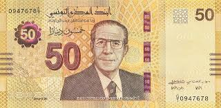 |
| www.greatamericancoincompany.com | 10,000 Iraqi Dinar Banknotes IQD - UNCIRCULATED | 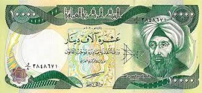 |
| www.instagram.com | The value of the Egyptian pound has declined steadily ... | 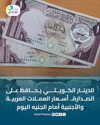 |
| en.numista.com | 5 Dinars (Hannibal; 1st. type) - Tunisia – Numista | 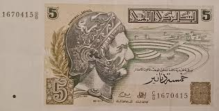 |
| www.pmgnotes.com | The Stolen Dinars of Kuwait | PMG | 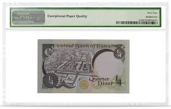 |
| championstamp.com | Mint, NH - Champion Stamp | 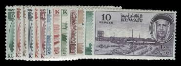 |
| www.apmex.com | Iraq 10,000 Dinars Banknote Unc | 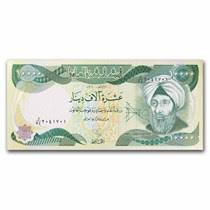 |
| www.dreamstime.com | King Farouk Antique Banknote, Morocco Stock Photo - Image of ... | 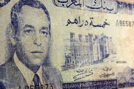 |
| noteshobby.com | Kuwait 1/2 Dinar 1968/1994 P 24 f UNC – NotesHOBBY | 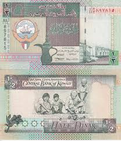 |
| www.alamy.com | 200 Yemeni rial bank note. Rial is the national currency of ... | 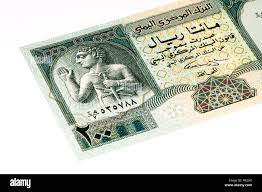 |
| cdadoscunhados.pt | TUNISIA BANKNOTES | 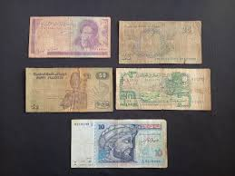 |
| www.tiktok.com | Understanding the 1/4 3/1 Bill of Kuwait Explained | TikTok | 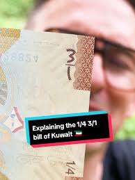 |
| commons.wikimedia.org | File:Avers Cinq Dinars 2013.jpg - Wikimedia Commons | 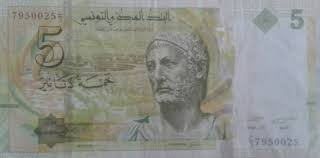 |
| www.reddit.com | Hey guys, Can i still exchange these old notes at the ... | 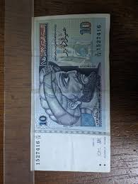 |
| www.ma-shops.com | Tunisie / Tunisien / Tunisia 1/2 Dinar 15/10/1973 Banque ... | 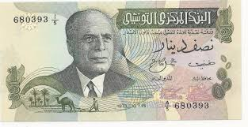 |
| www.numiscollection.com | Banknote Tunisia 5 Dinars - Hannibal - Carthaginians ships ... | 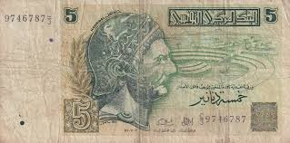 |
| www.theibns.org | Spink (Member 4508-G) | 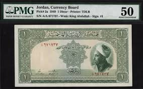 |
| www.instagram.com | The One and Only the strongest paper currency in the world ... | 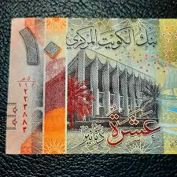 |
| www.delcampe.net | Oman - Oman P-31c, 100 Baisa, Sultan Qaboos, irrigation ... | 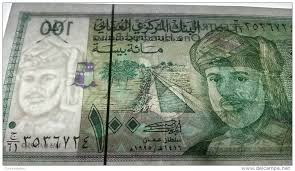 |
| www.banknoteworld.com | Kuwait 1/4 Dinar Banknote, L.1968 (1994 ND), P-23h, UNC | 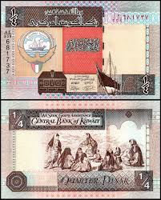 |
| www.greysheet.com | Bank Al Maghrib 200 dirhams B507d Sig 5 Unknown/Sakat ... | 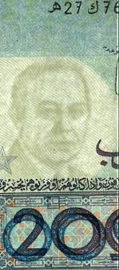 |
| www.istockphoto.com | Half Kuwaiti Dinar Stock Photo - Download Image Now ... | 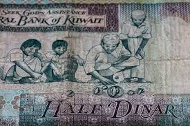 |
| www.etsy.com | Old Morocco 5 Dirhams off 1970 - Etsy | 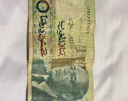 |
| www.cgbfr.com | 5 Dinars Spécimen TUNISIA 1993 P.86s 4410513 Banknotes | 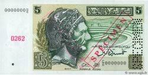 |
| www.iraq-businessnews.com | Officials Divided Over Dinar 'Reset' | Iraq Business ... | 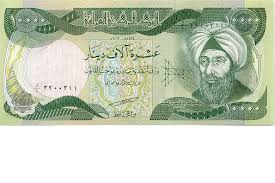 |
| www.banknotes.com | Banknotes.com - World Banknotes For Sale | 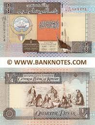 |
| colnect.com | Banknote: 1 Rial (Yemen, Arab Republic(1966-1971 ND Issue ... | 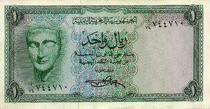 |
| www.hobbyofkings.com | 5000 Pounds Banknote | Soldier | Baalshamin Temple | P118 ... | 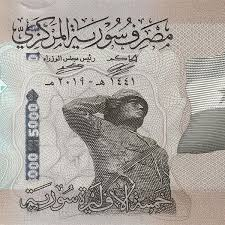 |
| www.numismaticnews.net | Iraqi Bank Note Sells for More than $150,000 at Auction ... | 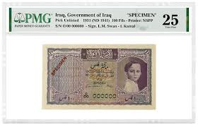 |
| banknotedb.com | 20 Dinars 2006 (2016) - Bahrain - BanknoteDB.com | 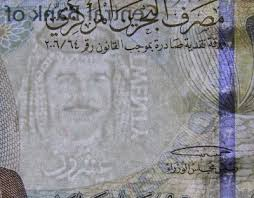 |
| www.facebook.com | Coinster (@rashmi0726) • Facebook | 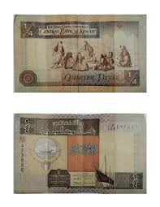 |
| www.leftovercurrency.com | 5 Tunisian Dinars banknote (Hannibal) - Exchange yours for ... | 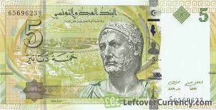 |
| www.ma-shops.com | TUNISIE. 1 Dinar. 15/10/1973. Président HABIB BOURGUIBA ... | 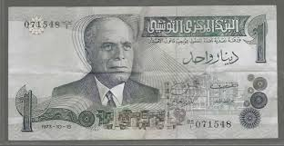 |
| www.ebay.com | 149604] Tunisia, 5 Dinars, 1993, 1993-11-07, KM:86, VF | eBay | 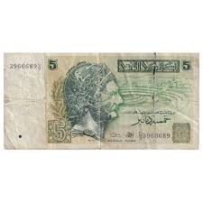 |
| en.wikipedia.org | Libyan pound - Wikipedia | 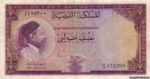 |
| www.shutterstock.com | 63 20 Dinars Tunisia Royalty-Free Images, Stock Photos ... | 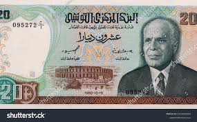 |
| www.allnumis.com | 1/4 Dinar L.1968 (1994), 1994 ND Issue - Law 32/1968 ... | 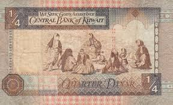 |
| www.banknote.ws | P-170 | 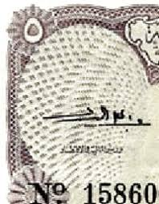 |
| en.foronum.com | Banknote 100 Syrian Pounds 1397-1411 | Syria | Foronum | |
| www.goldeneaglecoin.com | Syria 500 Pounds 1982 P#105c UNC - Golden Eagle Coins | |
| www.cgbfr.com | 25 Pounds SYRIA 1988 P.102d b60_1978 Banknotes | |
| www.dreamstime.com | 121 Tunisian Dinar Banknote Stock Photos - Free & Royalty ... | |
| www.numiscollection.com | Banknote Syrian Arab Republic 100 Pounds - Bust of Philip ... | |
| www.shutterstock.com | 100 Fils On 100 Dollar Kuwaiti Stock Photo 1887625834 ... | |
| www.greysheet.com | Banque Pennyrale de Syrie 100 Syrian pounds B620d,P104a ١٩٩٠ ... | |
| www.theibns.org | Lost and Stolen Banknotes | |
| jauae.com | Lot No 11 – Jaquar Auctions | |
| 2001-2009.state.gov | New National Currency for Iraq | |
| buyforeigncurrency.com | Kuwait 10 Dinar – Buy Foreign Currency |
{kind=link}